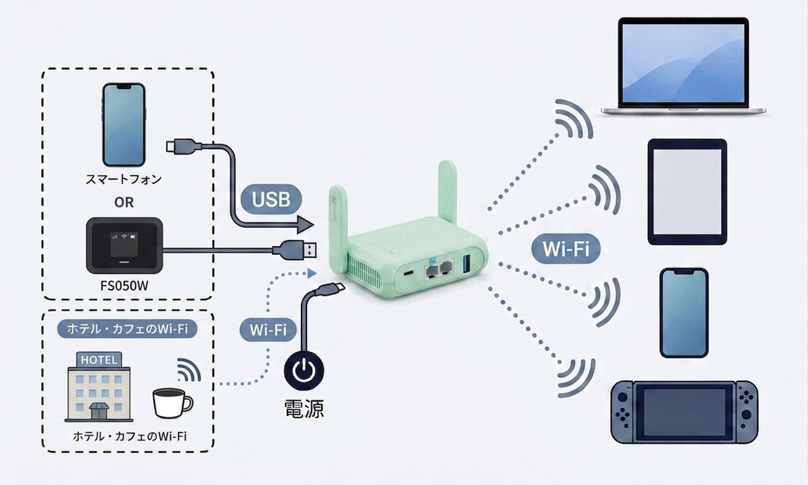
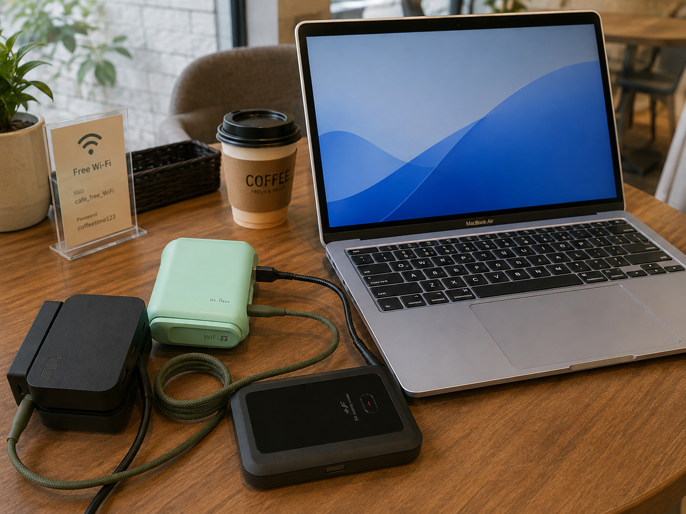
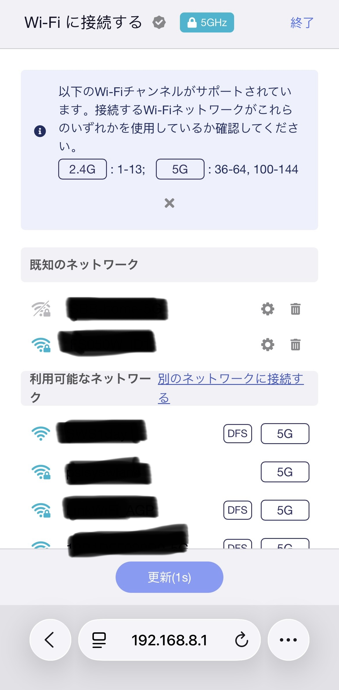
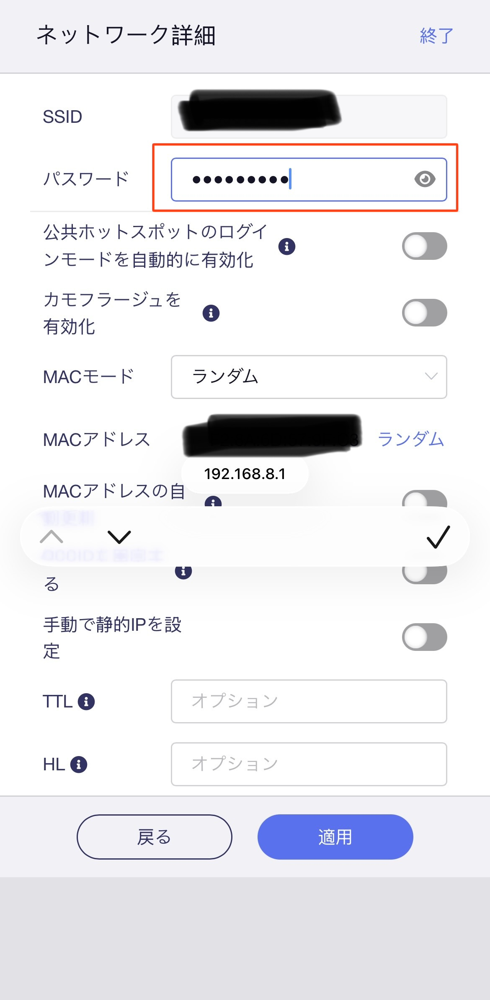

旅行・外出先でも快適にネットを使いたい
ホテルやカフェなどの公共のWi-Fiを安全に使うことも、モバイル通信をWi-Fiとして使うこともできる。
外出先でも、パソコンやタブレットを普段と同じようにインターネットにつなぐ方法を紹介します。
例えば…
私は旅行先で小型ルーターを使って、MacBookやiPadをインターネットに繋げています。
家族旅行では、家族全員が快適にインターネットを利用しています。

何が便利なの？
複数の機器をまとめて接続できる
接続先は小型のルーター。接続の設定をするのはこのルーター１台だけでいい。
それだけでノートPCもタブレットもアレもコレも…と、一つ一つ設定をしなくてよくなる。
Wi-Fiの設定を何度もしなくていい
インターネットを利用したい機器で、小型のルーターに繋げる設定を1度だけやることで、次回以降は自動接続する。
利用機器が多いほど、この便利さを感じるはず。
使っているもの
GL.iNet MT3600BE (Beryl 7)
私が使用している小型のWi-Fiルーターです。
スペックは以下を参照。
| Wi-Fi | Wi-Fi 7（デュアルバンド） |
|---|---|
| Wi-Fi速度 | 2.4GHz：最大688Mbps 5GHz：最大2,882Mbps |
| 有線LAN | 2.5Gbps × 2ポート（WAN × 1、LAN × 1） |
| USB | USB 3.0 × 1 |
| 電源 | USB Type-C（5V/3A、9V/3A、12V/2.5A） |
| 接続台数 | 120台以上 |
| VPN | WireGuard：最大1,100Mbps OpenVPN-DCO：最大1,000Mbps |
| サイズ・重量 | 120 × 83 × 34mm / 205g |
今回紹介する使用用途であれば、他のルーターでも構わないだろう。
GL.iNetの製品を選ぶ理由としては別のページにあるVPNも利用したい時にオススメ。
私としては、このMT3600BEが３台目であり、3代目のGL.iNet製品である。
それまで使っていた他の２台も、他の用途で現役で活躍しているのは、また別の話。
富士ソフト F+ FS050W
小型ルーターを購入する前から持っているモバイルルーターです。
スペックは以下を参照。
| モバイル通信 | 5G / 4G対応 |
|---|---|
| 通信速度 | 5G：受信最大2.8Gbps / 送信最大460Mbps |
| Wi-Fi | Wi-Fi 6（IEEE 802.11a/b/g/n/ac/ax） |
| Wi-Fi速度 | 最大1.2Gbps |
| SIM | eSIM + nanoSIM（デュアルSIM） |
| USB | USB Type-C（USB 3.2 Gen 1） |
| 接続台数 | Wi-Fi：32台 / USB：1台 |
| バッテリー | 4,000mAh |
| 連続通信時間 | 5G：約9時間 / 4G：約11時間 |
| サイズ・重量 | 約120 × 74 × 19mm / 約198g |
モデムの役割と、家族用の使い分けとして利用しています。
これはなくても大丈夫です。スマートフォンのUSBテザリングがモデムとして動作します。
実際の使用例
GL.iNet MT3600BEをType-Cで電源をとる。
電源：USB Type-C（5V/3A、9V/3A、12V/2.5A）に対応しているため、ご利用のACアダプタを確認してください。
MT3600BEにはACアダプタと電源コードが付属されているので、それを利用してもいい。
余談ですが、前のモデルであるMT3600は5V/3Aにしか対応しておらず、MT3600BEは複数の電圧に対応しているため、従来機よりもPD対応のACアダプターやモバイルバッテリーを利用しやすくなっています。
MT3600BEとFS050W（またはスマホ）をAtoCケーブルでつなぎ、USBテザリング
ここはUSBケーブルでスマホとUSBテザリングがもっともオススメ。
ただしその場合、通信事業者でテザリングの有無を確認してください。
私はスマホの取り回しが悪くなることや、バッテリーの問題でもともと持っていたFS050Wを活用しているだけである。
入力はLANケーブル(WAN)もあるため、LANケーブルで接続できるルーターやモデムが置いてあれば、それを利用してもいい。
ホテルやカフェのFree Wi-Fiに接続したい場合についてはコチラを参照。
MT3600BEのSSIDとパスワードでWi-Fiに接続
PC、スマホ、タブレット、ゲーム機などをMT3600BEのルーターとWi-Fi接続設定をする。
この設定は、1度だけでいい。次回以降は自動接続するので、USBテザリングで利用する場合は1.電源を入れる。2.スマホをUSBでつなげる。と、２ステップで簡単にWi-Fi環境が完成する。

ホテルやカフェのFree Wi-Fiを使いたい
MT3600BEを介してホテルやカフェのFree Wi-Fiを利用することができる。
パソコンやスマホをFree Wi-Fiへ直接接続せず、ルーターのファイアウォールによって外部の端末と分離できるため、Free Wi-Fiへ直接接続するより安全性を高められる。
ただし、ルーターを経由するだけですべての通信が暗号化されるわけではない。より安全に利用したい場合はVPNを併用する。
VPN環境についてはコチラを参照。
MT3600BEとWi-Fi接続した機器（スマホなど）で、管理画面に入る
管理画面への入り方は、ブラウザの検索バーにルーターのIPアドレス(192.168.8.1)を入力すると入れる。
初回はパスワードの変更が必要で、2回目以降は変更したパスワードでログイン可能。
ルーターのIPアドレスはスマホなどのWi-Fi設定の詳細からも確認できるため、「あれ？なんだっけ？」と思ったらそこで確認するとよい。
リピーター接続
管理画面に入るとリピーターモードの設定ができる。



リピーター接続画面に進んで、つなげたいSSIDを選択し、パスワードを入力する。
ここでは好きなアクセスポイントを選べるので、ホテルやカフェのFree Wi-Fiでもいいし、モバイルルーターのSSIDや、スマホのWi-Fiテザリングなど。
使い方はいろいろ思い浮かべることができる。
また、MT3600BEはマルチWANに対応している。
マルチWANとは、簡単に言うと複数のインターネット回線を同時に接続し、使い分けられる機能。
優先順位も選べるので、優先順位の1番上にUSBテザリング、２番目にリピーターと選択してもいいだろう。
注意点・うまくいかなかったこと
Androidスマホでは、USBが頻繁に切断された
Xperia 1 VやGalaxy Z Fold7をUSBテザリングで接続した際、接続が頻繁に切れることがあった。
同じケーブルでもiPhoneでは問題なく利用でき、USBケーブルを変更するとAndroidでも安定した。
USB Type-Cケーブルは製品によって対応規格やデータ通信性能が異なるため、USBテザリングが不安定な場合はケーブルを変更すると改善することがある。